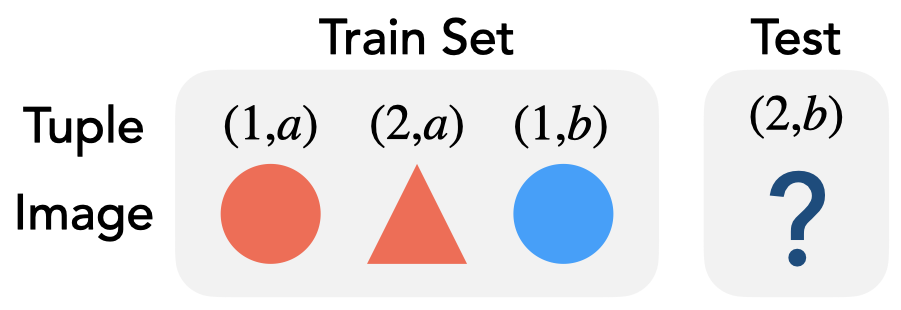

Exploring Diffusion Models on a Synthetic Task
Compositional Abilities Emerge Multiplicatively
In this blog post, we will introduce our recent research in which we evaluated the capabilities of diffusion models. These models have already demonstrated their potential to generate realistic images. Our investigation zeroes in on text-to-image generation, aiming to assess the model's compositional capabilities.
To facilitate this evaluation, we first developed a theoretical framework that we've named 'concept graph'. This framework provided a clear definition of what we define 'compositional ability'. Subsequently, we devised a synthetic task in alignment with our theoretical framework. We then empirically examined the performance of the diffusion model on this task, providing us with a comprehensive understanding of its compositional ability.
Compositional Ability of the Diffusion Model
The diffusion models have demonstrated impressive capabilities in generating realistic images. However, their ability to integrate learned concepts and generate entirely new images remains a topic of ongoing discussion. The following images serve as examples of those generated by a diffusion model. In these cases, we provided color and object descriptors via text prompts and tasked the model with generating images of specific animals or fishes.
The model showed its power in generating accurate images for lizards and goldfish, accurately adhering to the text prompts. However, its performance was less successful when tasked with generating images of a panda. Here, the model disregarded the color information specified in the text prompt, resulting in an incorrect output. These observations lead us to an intriguing question: When does the diffusion model succeed in compositing multiple concepts (in this case, color and object), and when does it fail?
Synthetic Task
To delve into this question empirically, we designed a synthetic task. More specifically, we constructed a synthetic dataset designed to test the model's compositional abilities. The nature of this task resembles an IQ test. Let's look at the simplest form of this task.
We assembled a set of image and text prompt pairs. The model is trained on a training set (as shown on the left), following which it generates a new image based on the provided text prompts.
Here's an interactive challenge: Can you guess which object/color should be in the blank space ? You can see the answer by hovering the mouse over the image.

When trying to solve this test, we make associations between each character in the text prompt and specific attributes in the image. We guess that numbers correlate to the shape of the object (i.e., triangle or circle), while alphabetical characters are tied to its color (i.e., blue or red).
Following this, we imagine an unseen image by combining these learned concepts - in this case, shape and color.
Concept Graph: A Minimalistic Framework for Compositionality
To structure this test, we devised a theoretical framework. Within this framework, we represented the compositional ability using a graph. For example, let's consider adding an additional concept, 'size' (either small or big), to the above example. This results in a 3D cube graph, visually embodying these three distinct concepts.
The edges represent the concepts (shape, color, size), while the nodes denote their respective attributes (triangle/circle, red/blue, small/big). The proposed concept graph shares a similar structure with the Hamming Graph and is also inspired by psychological studies.
Multiplicative Emergence of Compositional Abilities
Based on this theoretical model, we can formulate a hypothesis: In the learning process, the distance from the training set on the graph dictates when the capability emerges. Let's consider using the blue nodes for training and the pink nodes for testing.
Intuitively, the compositional ability emerges in sequence: The model first generates the correct images for the light pink nodes; subsequently, it generates accurate images for the dark pink nodes. Is this hypothesis correct? We'll verify it through an experiment.
Below we visualize the progression of the accuracy for the generated images throughout the training period.
In this experiment, we trained linear classifiers for each concept - shape, color, size - using pairs of text and images from both the training and test datasets. Subsequently, we evaluated their classification accuracy for the generated images.
In this scenario, the diffusion model demonstrates compositional capability, achieving 100% accuracy for both the 1-hop (light pink) and the 2-hop (dark pink) nodes. This compositional ability unfolds sequentially: first, the 1-hop node reaches 100% accuracy, followed by the 2-hop node achieving full accuracy after a certain period. This experimental result seems intuitive, as the model can synthesize two concepts once each individual concept has been learned. Interestingly, there's the emergence of accuracy for the 2-hop node.
What is the mechanism behind emergent capability? To investigate this, we have plotted the accuracy for each concept.
Our task is multiplicative in nature, meaning that the accuracy reaches 100% only when all concepts are accurate. Therefore, the increase in accuracy commences after learning the most challenging concept, which in this case, is color.
The aforementioned results can be viewed from the perspective of fairness. We noticed a bias towards red, the majority color in the training set. The minority color, which is blue, was learned only after a certain period following the learning of the majority color, red.
This result suggests that we should not halt training once the loss function converges for the training datasets. Continuing beyond this point can potentially yield fairer results for the minority groups.
Challenges for Compositional Generalization
Next, we will investigate examples where the diffusion model struggles to composite multiple concepts. We decreased the number of samples for specific nodes and monitored the accuracy of the images generated for varying sample sizes.
We see that different concepts require varying amounts of samples: the 'color' concept necessitates fewer samples, while the 'size' concept requires a larger quantity.
Avenues for Extensions
- We will extend the theoretical foundation of 'concept graphs' framework.
- We will conduct experiments using real-world data.
Wrapping Up
In this blog post, we introduce our theoretical framework, termed 'concept graph', which is designed to assess the compositional abilities of text-to-image generation models. Based on this theoretical framework, we created synthetic datasets and conducted a series of experiments.
In this post, we highlight some of our key experimental results. Our findings are as follows:
(i) The compositional structure of the data-generating process determines the order in which the capabilities emerge, as well as the ability to combine them;
(ii) The learning of individual concepts influences performance on compositional tasks. This has a multiplicative effect, explaining the sudden emergence of capability; and (iii) When the training data for specific concepts is insufficient, learning and composing capabilities become more challenging.